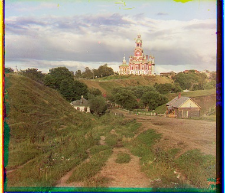
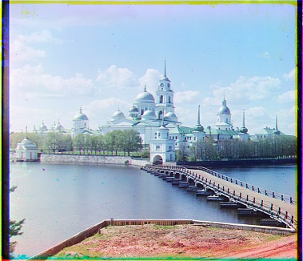
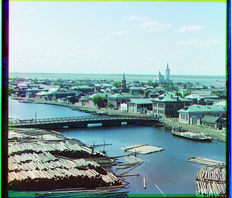
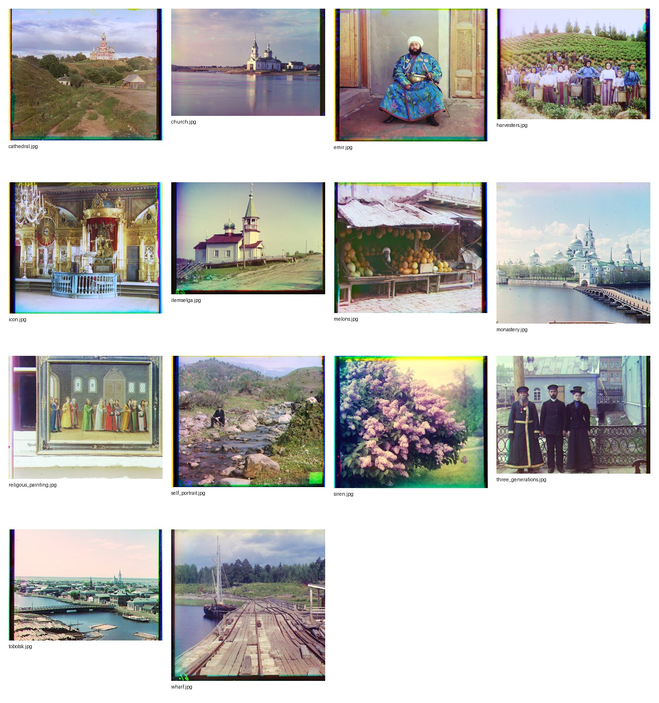
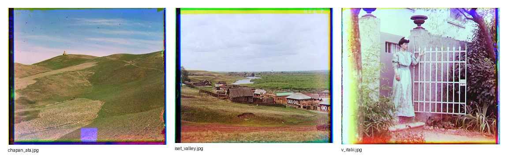
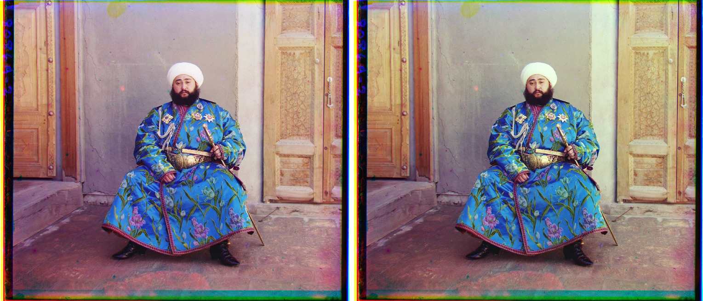
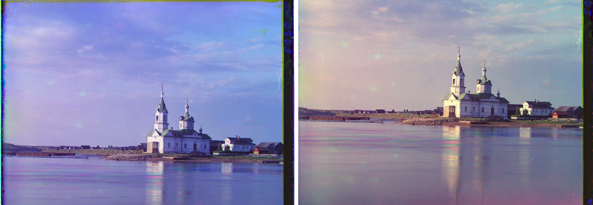
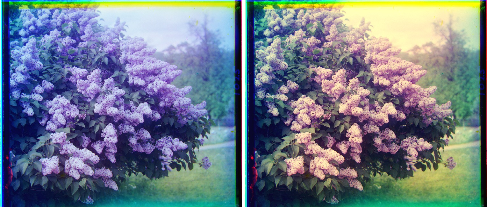

Images of the Russian Empire
Project 1 colorizes Prokudin-Gorskii glass plate negatives by splitting the stacked BGR exposures, aligning green and red to blue, and composing a single RGB image.
Project 1 colorizes Prokudin-Gorskii glass plate negatives by splitting the stacked BGR exposures, aligning green and red to blue, and composing a single RGB image.
Each input plate is a grayscale image whose top, middle, and bottom thirds are the blue, green, and red exposures. I trim the plate to a multiple of three rows, split it into the three channels, and estimate the translation needed to align green and red with the blue reference channel. Offsets below are reported as (x, y), where positive x shifts right and positive y shifts down.
The base matcher scores candidate shifts with normalized cross-correlation. For a candidate displacement, the score is computed only on the overlapping interior pixels, so wrapped borders from shifting cannot help the score. I ignore 12% of each side while matching because the plate borders often contain scanner marks, saturated strips, or channel-specific artifacts.
For small JPEGs I exhaustively search a [-15, 15] window. For high-resolution TIFFs I build an image pyramid by repeated 2x2 averaging, search broadly at the coarsest level, and refine within a radius of four pixels at each finer level. This keeps the full-size TIFFs around eight seconds each on my run.
One extra feature made a large difference on difficult plates such as Emir: instead of matching raw brightness for the final run, I match normalized gradient magnitude images with the same NCC metric. The raw color channels can have very different intensities, but their edges usually agree.
These are the low-resolution JPEG sanity checks using raw-pixel NCC and an exhaustive [-15, 15] search.



The full provided set was aligned with the pyramid method using edge NCC. I visually checked the results and did not see a major alignment failure.

| Image | G offset | R offset | Time |
|---|---|---|---|
| cathedral.jpg | (2, 5) | (3, 12) | 0.38s |
| church.tif | (4, 25) | (-4, 58) | 8.26s |
| emir.tif | (24, 49) | (40, 107) | 8.72s |
| harvesters.tif | (17, 60) | (14, 124) | 8.13s |
| icon.tif | (17, 42) | (23, 90) | 8.69s |
| ilemselga.tif | (7, 40) | (11, 131) | 8.35s |
| melons.tif | (10, 80) | (11, 172) | 8.64s |
| monastery.jpg | (2, -3) | (2, 3) | 0.42s |
| religous_painting.tif | (6, 30) | (6, 70) | 8.33s |
| self_portrait.tif | (29, 78) | (35, 172) | 8.89s |
| siren.tif | (-6, 49) | (-24, 96) | 8.92s |
| three_generations.tif | (12, 54) | (9, 111) | 8.91s |
| tobolsk.jpg | (3, 3) | (3, 6) | 0.36s |
| wharf.tif | (-7, 15) | (-16, 83) | 8.73s |
I downloaded three additional raw glass-negative JPEGs from the Library of Congress Prokudin-Gorskii collection and ran the same pyramid code. These are not pre-colorized composites.

| Image | LOC item | G offset | R offset |
|---|---|---|---|
| chapan_ata.jpg | 2018680117 | (1, 5) | (1, 11) |
| iset_valley.jpg | 2018681043 | (3, 7) | (4, 14) |
| v_italii.jpg | 2018679070 | (1, 2) | (1, 9) |
Raw NCC compares brightness directly, which can fail when different color filters produce different intensities. I added a simple gradient magnitude feature computed from central differences. The displacement search is still NCC, but it is scoring edge structure instead of raw intensity. This helped align Emir cleanly.
After alignment I compute a valid overlap mask, crop invalid shift regions, trim border strips with high channel disagreement or near-black/near-white saturation, stretch contrast using robust percentiles, and apply gray-world white balance. The crop is intentionally conservative, so some historical plate border remains when removing it would risk cutting image content.



I did not observe a clear alignment failure in the final edge-NCC pyramid outputs. The remaining artifacts are mostly plate border color fringes, stains, and imperfect automatic cropping rather than registration errors.